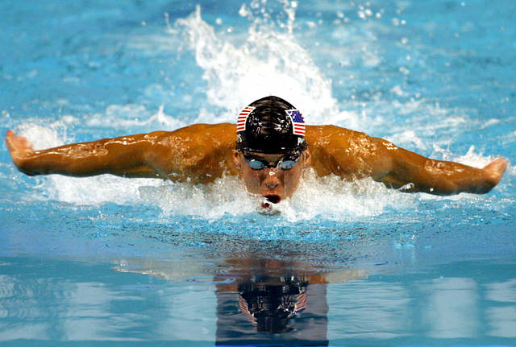
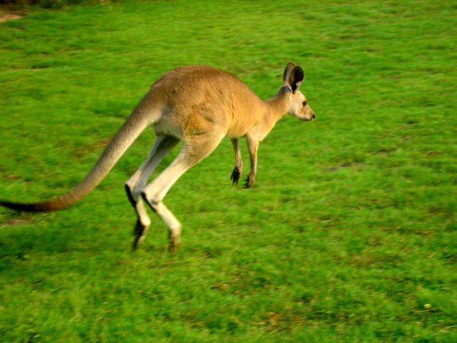

Modes of Locomotion





Visual perception makes locomotion truly useful because we can orient to distal objects.
Visual perception makes locomotion truly useful because we can orient to distal objects.


Visual proprioception vs. Mechanical proprioception. Vision typically overrides other sources.


Conclusion: Peripheral flow has a stronger influence on perceived egomotion than central flow.
Animals can control approach by using a particular kind of information: Tau (τ).